Developer template editor
Make your own developer templates — and change the ones you have — inside pgtc. The editor writes the header of the template for you, helps with the Jinja marks of the body, checks what you write, and shows the SQL the template gives while you type.
A developer template is a small text file: a header that lists the fields of the form, and a body, the SQL with places for the values (the file format is described in Writing your own templates). You can still write such a file with any text editor. With the template editor you do not have to: you fill in dialogs, pick from lists, and look at the result.
The editor needs no connection. A connected server helps in two places: the preview is then made for that server's version, and Test can fill its drop-down lists from the selected database.
The template manager
opens the template manager. It is in the menu only — there
is no key for it (you can give it one: the command is
template_manager).

The list shows your templates folder as a tree: the sections (the folders — Functions, Tables, …) and, below each, its templates. It is the same tree as the F7 picker shows, with two differences:
- Empty sections are listed too, so you can put a first template into one. (The picker hides them.)
- A template that has a variant for newer servers has a row for each file; the
variant's row ends with its version folder, for example
[12_plus].
| Button | Key | What it does |
|---|---|---|
| Edit | Enter, E, double click | Opens the selected template in a template tab and closes the manager. A template that is open already is not opened twice — its tab is shown. |
| New | N | Opens a tab with a new, empty template for the section the cursor is in, and closes the manager. |
| Section | T | Makes a new, empty section. |
| Copy | C | Copies the selected template to a new file name in the same section. |
| Rename | R | Gives the selected template another file name, or the selected section another name. |
| Delete | D | Deletes the selected template file, or the selected (empty) section. It asks first. |
| Close | Esc, L | Closes the manager. |
The letters work while the list has the focus. Tab moves between the search box, the list and the buttons; Up / Down, PgUp / PgDn move in the list.
Searching

trigger typed into Search: the two trigger templates — one of them
with its variant for PostgreSQL 12 and newer.Go to Search (Alt+S, or S from the list) and type: the list keeps the templates whose name, description or file name contains the text.
Sections
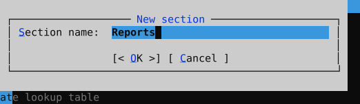
A section is a folder of the templates folder; its name is what the F7 picker shows as the category.
Section asks for a name and makes the folder. A section inside another one is written with a
slash: Tables/Partitions.
- A name cannot contain
\ / : * ? " < > |, and cannot start or end with a dot. - You do not have to make a section first: the Save template dialog can make one, too.
- Delete removes a section only when it is empty. Delete (or move) its templates first.
Copy, rename, delete
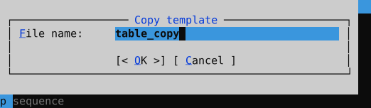
table_copy.Copy is the quickest way to a template of your own: copy one that comes with pgtc, then
Edit the copy. The copy has the same name inside as the original — change it in
the editor, so that you can tell the two apart in the picker.
Copy and Rename ask for a file name (without
.pgtemplate). The file name is not what the picker shows — that is the Name you
give the template in its tab. A name that is taken already is refused.
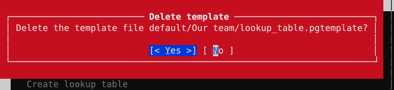
| A template with files in several version folders | |
|---|---|
| Copy, Rename | Act on all its files: the template stays one template with its variants. |
| Delete | Deletes the file of the selected row only — the variant for PostgreSQL 16, say, and not the one for every version. |
A deleted template that came with pgtc comes back with . One of your own is gone.
If a template you rename is open in a tab, the tab follows: its next save goes to the new file.
A new template, step by step
As an example we make Create lookup table: a table with a code and a name, as a team might want all its lookup tables to look. It asks for a schema, a table name, the length of the code, and whether to add audit columns.
- Open , put the cursor on the section the template belongs to (or anywhere, and choose the section when saving), and press N.
- A template tab opens, empty, with the cursor on Name.

A new template: no name, no parameters, an empty body. The bar on top names the section the template was made for — the one the cursor was in, in the manager — and the version folder; the first save proposes them. The bottom line of the window says how to go on. - Press Enter and type the name and the description.

The name is the label in the F7 picker; the description is shown under the picker's list and is searched by its search box. - Add the parameters — the fields of the form. For each: Insert, fill in the
parameter dialog, Enter. Here:
schema(a choice from the database's schemas),name(a name),code_length(a number, default 10),with_audit(a checkbox). - Press Tab to go to the body, and write the SQL. Where a value of the form goes, press F7,
choose and pick the parameter — or type the mark yourself:
{{ name|ident }}. - Watch the preview below the body: it shows the SQL the template gives now. The status row of the tab says No problems found — or what is wrong.
- Press Ctrl+S. The first time, pgtc asks for the section, the version folder and the file name.
- Press F5 to try the form as its users will see it.
From now on the template is in the F7 picker of every query tab.
The template tab

| Part | What it is |
|---|---|
| File bar | The full path of the template file, with * while something is not saved. A template that has no file yet shows where it will go instead: New template — section: Our team · version folder: default · not saved yet. |
| Header | On the left: Name, Description and the list of parameters, with the buttons Add, Edit, Delete, Up, Down. It can be switched to raw text. |
| Body | The SQL with its Jinja marks, in a SQL editor with all its keys: selecting, copy and paste, undo, find and replace. |
| Preview | The SQL the template gives with its default values — or the error that prevents it. Read only; you can select and copy from it. |
| Status row | What the checks found, the server version the preview is made for, and the cursor position. |
The tab's label is Template: and the name. On a narrow terminal (fewer than about 70 columns for the tab) the header is above the body instead of beside it.
Moving between the parts
| Key | What it does |
|---|---|
| Alt+Down | The next part: header → body → preview → header. |
| Alt+Up | The previous part. |
| Tab / Shift+Tab | The same, from the header list and from the preview. In the body (and in the raw header) Tab indents, as in every editor — use Alt+Down / Alt+Up there. |
| Ctrl+Tab, F6 | The object tree ↔ the tab, as everywhere. |
| Ctrl+R | Hides / shows the preview. |
| Alt+Shift+Up / Alt+Shift+Down | Makes the preview smaller / larger. With the mouse: drag the line Preview. |
With the mouse, click into a part to work in it; the wheel scrolls the part under the pointer.
The keys of the tab
These work in every part of a template tab:
| Key | What it does |
|---|---|
| Ctrl+S | Save. |
| F5 | Test: the template in its real form. |
| F7 | The helper menu. |
| Ctrl+T | The header as a list ↔ as raw text. |
| Ctrl+W | Closes the tab (asks about unsaved changes). |
| F1 | The keys that work where you are. |

F5 and F7 mean something else in a query tab (execute, insert from a template). In a template tab there is nothing to execute: F5 tries the template out, F7 helps writing it.
The header list
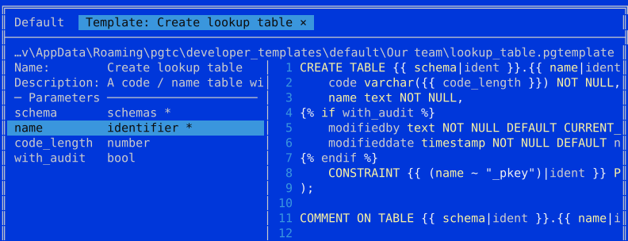
name. Each parameter row shows the name,
the type (for a choice from the database: what it lists) and * if the field must be filled in.| Key | Button | What it does |
|---|---|---|
| Up / Down, PgUp / PgDn, Home / End | Move the cursor. | |
| Enter | Edit | On Name or Description: a dialog with both. On a parameter: its dialog. A double click does the same. |
| Insert | Add | A new parameter, added at the end. |
| Delete | Delete | Deletes the parameter. It asks first — there is no undo for the list. |
| Ctrl+Up / Ctrl+Down (or Shift+Up / Shift+Down) | Up / Down | Move the parameter. The order of the list is the order of the fields in the form. |
| F2 | The context menu with the same actions. |
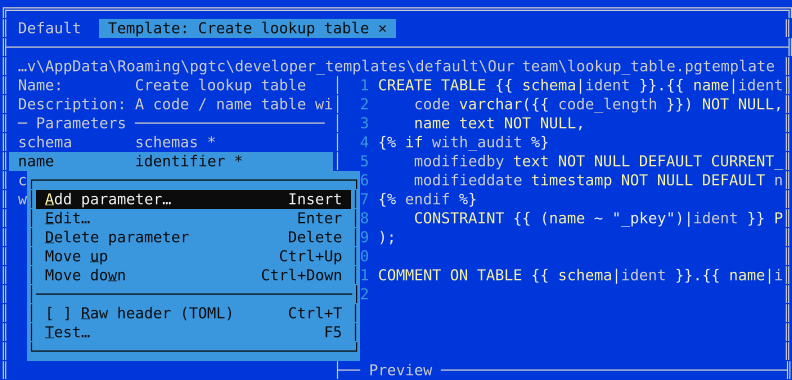
Typing does nothing in the list — it is not a text. To write the header as text, switch to the raw header.
If you rename a parameter, the body still uses the old name. The status row tells you at once: Not declared: old_name · Not used: new_name. Change the name in the body too (find and replace: Ctrl+F).
The parameter dialog
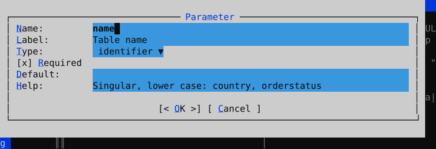
name: a PostgreSQL name that must be filled in, with a hint for the user.| Field | Meaning |
|---|---|
| Name | The name of the value in the body: {{ name }}. Letters, digits and _; every parameter needs its own. |
| Label | The text in front of the field in the form. Empty: the name is shown. |
| Type | The kind of field — see below. The dialog shows the inputs that belong to the chosen type; what you typed already stays. |
| Required | The field must be filled in; the form marks it with * and gives no SQL without it. |
| Default | The value the field starts with. For a checkbox: Checked by default. |
| Help | A hint shown at the bottom of the form while the field has the focus. |
OK checks the parameter: it needs a name that no other parameter has, a choice needs its values, a list needs fields. What is wrong is said in a message, and the dialog stays open.
The types
| Type | The form shows | The dialog also asks for |
|---|---|---|
text | An input line | |
identifier | An input line for a PostgreSQL name; the name is checked | |
number | An input line for a number | |
bool | A checkbox | |
choice | A drop-down list | Values from: fixed options, database objects, or a query — see below |
sql | A SQL box of 5 rows | Takes the free rows of the form: the box grows to all the rows the form has left (for a function body, a view's query) |
list | A list of rows with Add / Edit / Delete / Up / Down | The fields of a row |
A choice and its values
A choice takes its values from one of three places. Choose it in Values from:

schema lists the schemas of the database.
Source offers every list pgtc can read: schemas, tables, views, materialized views,
sequences, functions, procedures, types, user types, domains, indexes, triggers, roles
(what each lists).
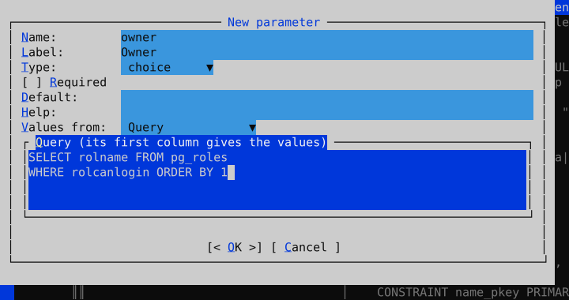
SELECT,
WITH, VALUES, TABLE); its first column gives the values.A choice from database objects has two advantages over a query of your own: the form pre-fills it from the
object selected in the tree, and its values know their schema — in the body
{{ table|ident }} writes sales."Order Items", correctly quoted.
A list and its fields
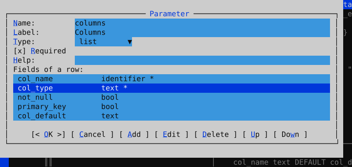
columns of Create table: five fields make one row.A list is a field with any number of rows — the columns of a table, the arguments of a function. The dialog of a list parameter has the list Fields of a row and five more buttons:
| Button | Key | What it does |
|---|---|---|
| Add | Alt+A | A new field, in a dialog of its own. |
| Edit | Alt+E | The dialog of the selected field. |
| Delete | Alt+D | Removes the selected field. |
| Up / Down | Alt+U / Alt+W | Move the selected field: the order of the fields in the row dialog. |

col_type, opened over the dialog of its list. A field is a parameter like the
others — only a list inside a list is not possible.Esc in a field's dialog goes back to the list's dialog; nothing is changed until you press OK there too.
The body and its helper menu
The body is SQL with Jinja marks: {{ … }} writes a value,
{% … %} decides and repeats. You can type them — with autocomplete for the
names — or press F7.
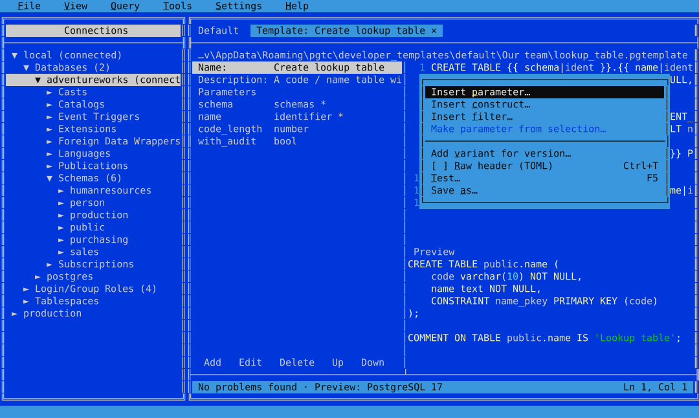
| Item | What it does |
|---|---|
| A list of the declared parameters; the chosen one is written at the cursor as its type needs it. | |
A list of Jinja constructs — if, for, server checks — written at the cursor or around the selection. | |
A list of filters — |ident, |upper, … — put behind the value the cursor is in. | |
| The selected text becomes the default of a new parameter that takes its place. | |
| A copy of the template for newer servers. | |
| Ctrl+T: the header as text. | |
| F5: the template in its form. | |
| Saves under another section, version folder or file name. |
Whatever a helper inserts is one step for Ctrl+Z.
Insert parameter

| The parameter is | It is written as |
|---|---|
| text, number, SQL, a choice from fixed options or a query | {{ comment }} |
a name (identifier), a choice from database objects | {{ name|ident }} — quoted when PostgreSQL needs it |
| a checkbox | {% if with_audit %}, an empty line for what the checkbox adds, {% endif %} |
| a list | The whole loop: {% for row in columns %}, a line with every field of the row and the comma between rows, {% endfor %} |
The loop of a list is a starting point: it writes the fields one after another, and you arrange them into the SQL
you need. For the columns of the picture above it writes
{% for row in columns %}
{{ row.col_name|ident }} {{ row.col_type }} {{ row.not_null }} {{ row.primary_key }} {{ row.col_default }}{% if not loop.last %},{% endif %}
{% endfor %}The empty line is wanted: a {% … %} mark at the end of a line takes the line break with it, and the
empty line puts one back, so that every row gets its own line.
server_version (a number such as 170002) and database (the name of the
current database) are there in every template without being declared.
Insert construct
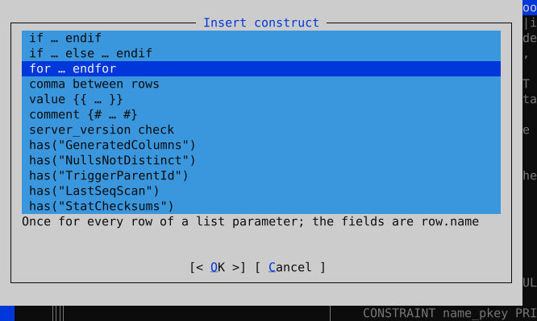
| Construct | It writes | Use it for |
|---|---|---|
| if … endif | {% if %} … {% endif %} | A part of the SQL only when a checkbox is checked or a value is filled in. |
| if … else … endif | {% if %} … {% else %} … {% endif %} | One part or another. |
| for … endfor | {% for row in %} … {% endfor %} | Once for every row of a list; the fields are row.name. |
| comma between rows | {% if not loop.last %},{% endif %} | Inside a loop: a comma after every row but the last. |
| value {{ … }} | {{ }} | The value of a parameter or an expression. |
| comment {# … #} | {# #} | A note for the author; it does not get into the SQL. |
| server_version check | {% if server_version >= 170000 %} … {% endif %} | A part only from a server version on. |
| has("…") | {% if has("NullsNotDistinct") %} … {% endif %} | A part only on servers that have a feature. One entry per feature pgtc knows, with the PostgreSQL version it came in. |
After inserting, the cursor is where you go on typing — in the condition of an if, behind
in of a for.
With a selection, the construct is put around it. Select the lines that should depend on a condition, press F7, , if … endif, and type the condition:

name text NOT NULL, was selected; if … endif went around it, and the
condition was typed. The preview follows.Insert filter

A filter changes a value on its way into the SQL: {{ name|ident }}. Where the filter goes depends on
where the cursor is:
- inside a
{{ … }}: behind its value —{{ name }}becomes{{ name|ident }}, wherever in the mark the cursor is; - with a selected name: the name becomes a mark —
ownerbecomes{{ owner|ident }}; - anywhere else: a new mark
{{ |ident }}, with the cursor where the value goes.
| Filter | What it does |
|---|---|
ident | Quotes as an identifier: Order Items → "Order Items"; an object chosen from the database → schema.name, both parts quoted when needed. Use it for every name. |
qtLiteral | Quotes as a string literal: O'Brien → 'O''Brien'. Use it for texts that go into the SQL as values, such as a comment. |
qtTypeIdent | Quotes a type name; double precision and integer[] stay as they are. |
indent(4, true) | Indents every line of a text by 4 spaces — for a function body typed into a SQL box. |
default("") | Another value when this one is not there. |
upper, lower, trim | Upper case, lower case, without the spaces at both ends. |
replace("a", "b") | Replaces a text by another. |
join(", ") | The items of a list in one line, separated. |
length | The number of characters, or of rows of a list. |
These are the filters you will need most; every other filter of the template language works, too — type it.
Make parameter from selection
The quickest way from a working statement to a template: paste the statement into the body, then turn the parts that differ each time into parameters.
- Select the text in the body.

Lookup tableis selected in the last line of the body. - F7, . The parameter dialog opens with the
selected text as the Default. Give the parameter a name (and a label, a type …).
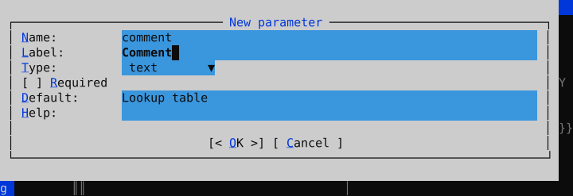
The new parameter: the selection is its default, so the template gives the same SQL as before. - Enter: the parameter is added to the list, and the selected text is replaced by its mark.

The parameter commentis in the list; the body has{{ comment }}where the text was; the preview still shows the same SQL.
A selection of several lines becomes a parameter of the type sql. The item is available while the
header is shown as a list and something is selected in the body.
Autocomplete in the body
The body has an autocomplete list, with the same keys as the list of the query tabs. It knows the template: it offers the parameters you declared, the fields of a list's rows, the filters, the Jinja statements. It needs no connection.
| Key | What it does |
|---|---|
| Ctrl+Space, Alt+/ | Opens the list at the cursor. |
| Up / Down, PgUp / PgDn | Choose an entry. Typing narrows the list. |
| Enter, Tab | Take the entry: it replaces what you typed of it. |
| Esc | Closes the list (only the list). |
The list also opens by itself while you type: inside a mark with the first letter of a name, after a
., after a | and after has("; in the SQL outside the marks after the third
letter, as in a query tab.
In the SQL: a parameter as its whole mark

sch typed in the SQL: the parameter schema first, then the SQL keywords that
start like this.Outside the Jinja marks the list offers the parameters and the SQL keywords. Taking a parameter writes its
complete mark, the same text Insert parameter writes: type sch,
Enter, and the body has {{ schema|ident }}. A checkbox gives its
{% if %} … {% endif %} block, a list its whole loop. The parameters come first in the list,
in the order of the header.
Inside a mark
| Where the cursor is | The list offers |
|---|---|
{{ … or {% if … | The parameters (with their type), the row variables of the loops the cursor is in and loop, variables made with {% set %}, server_version, database, has(", and the words not, and, or, in, is, true, false, none. Here a parameter is written as its name only. |
row. | After the variable of a {% for row in list %}: the fields of that list parameter. |
loop. | last, first, index, index0, length. |
table. | After a choice from database objects: its parts — schema, name; for functions and procedures also args, for triggers table. |
| | The filters, each with a few words about what it does; indent, default, replace and join come with their arguments. |
{% | The statements: if, elif, else, endif, for, endfor, set. |
has(" | The names of the server features, with the PostgreSQL version each came in. |

{% for c in columns %}, after c.: the five fields of a row of
columns, with their types.
|: the filters.The list always shows the parameters as they are now — add one in the header list, and the body's list has it. With the raw header shown, it reads the parameters from the text (none while the text has a mistake).
Nothing is offered inside a comment {# … #} and inside a text in quotes (other than the feature name
of has("…")). Names of the database — tables, columns — are not offered: the template tab has no
connection, and a template seldom names real objects.
Preview and checks
The preview shows the SQL the template gives — made again after every change of the body or the header. It has no form to take values from, so it uses these:
| Parameter | Value in the preview |
|---|---|
| with a default | The default. |
| required, without a default | Its own name (name); for a number 1; for a choice from database objects schema.name. |
| not required, without a default | Empty — so you see what the SQL looks like when the user leaves the field empty. |
| a checkbox | Checked or not, as its default says. |
| a list | One row; each field has its default, or else its own name. |
To see the template with other values, use Test.
What the status row says
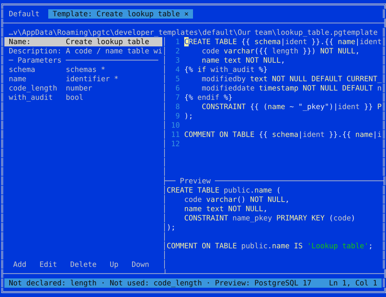
{{ length }}, but the parameter is called code_length. The status
row: Not declared: length · Not used: code_length. The preview shows what this gives — an empty
varchar().| Status row | Meaning |
|---|---|
| No problems found | The header is complete, the body is correct Jinja, every name it uses is declared, every parameter is used. |
| Not declared: … | The body uses names that are no parameters (and none of server_version, database). Mostly a typing mistake or a renamed parameter. In the SQL such a value is empty. |
| Not used: … | Parameters the body never uses. The form would ask for something that changes nothing. |
| Body, line N: … | A Jinja mistake — a mark that is not closed, an unknown statement. The preview shows the same message. |
| Header: … | The header is not complete — a choice without values, a list without fields — or, in the raw header, the text is not correct TOML. |
| Preview: … | The body is correct but cannot be rendered with the preview's values (an unknown filter, an unknown feature name in has("…")). |
Not declared and Not used are hints: such a template can be saved. The other three are errors: a template that has one is not saved.
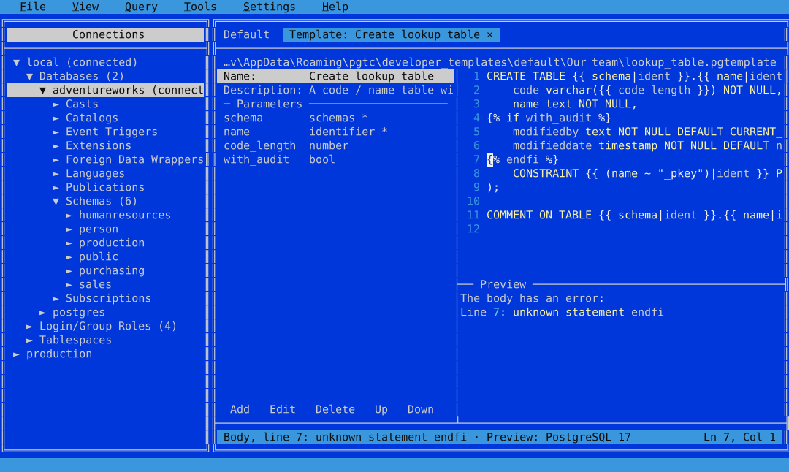
{% endfi %} instead of {% endif %}: the status row and the preview name the
line; the cursor was put there by the refused save.To get to a Jinja error: go to the preview and press Enter — the cursor jumps to the line of the error in the body. Ctrl+S and F5 do the same when they refuse the template.
The server version of the preview
A body can depend on the server: {% if has("NullsNotDistinct") %},
{% if server_version >= 170000 %}. The status row says which version the preview is made for:
| Status row | When |
|---|---|
| Preview: PostgreSQL 17 | A row of a connected server is selected in the object tree: the preview is made for that server. Select another server to see the template's SQL for it. |
| Preview: PostgreSQL 16 (assumed) | No connected server is selected. For a template in a version folder such as 16_plus: the first version of that folder. For a template in default: the newest version pgtc knows features of. |
The raw header

Ctrl+T (also in the F7 and F2 menus) replaces the list by the header as text — TOML, exactly what is written into the file. All editor keys work in it. This is for those who are faster typing than filling dialogs: copy a parameter block and change it, rename with find and replace, paste a header from another template.
Ctrl+T again goes back to the list. For that the text must be correct: with a mistake in it the text stays, and the bottom line of the window and the status row say what is wrong (Header: …). The preview and the checks follow the text while you type.
pgtc writes a header in its own, fixed way: one key per line, always in the same order, without comments. A header you wrote by hand — aligned, with comments — is kept as it is while you stay in the raw header, and also when you change only the body. Once you change something in the list and save, the header is written in pgtc's way.
A template file whose header pgtc cannot read opens with the raw header shown, so that you can repair it.
Test: the template in its form
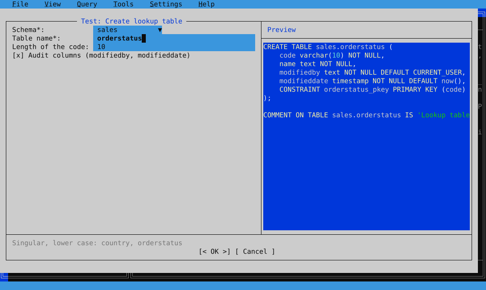
F5 opens the template in its real form — the text as it is in the tab now, saved or not. Fill it in as its users will, and look at the preview. Everything works as described for the form: lists with their row dialogs, SQL boxes, the help line.
- OK and Esc only close the form. Nothing is inserted anywhere, and nothing is run.
- A template with an error is not tested; the message says what is wrong.
The drop-down lists of the test
Choices from database objects and from queries need a database. A template tab has no connection of its own; the test uses the database selected in the object tree:
- Select a database of a connected server (or anything inside it) in the tree, then press F5: the lists are read from that database, and the form picks up the tree's selection as it does in a query tab.
- The database must be open in the tree (expand it once). Otherwise — and when nothing is selected — the drop-downs stay empty and say select a connected database in the object tree. Fixed options, and all other fields, work without a database.
Saving
Ctrl+S () saves the template. A template that has a file is written to it at once.
The first save, and Save as

| Field | Meaning |
|---|---|
| Section | The sections you have, (no section) for a template outside every section, and New section…. |
| New section | Used with New section…: the name of a section to make. Tables/Partitions makes a section inside another. |
| Version folder | default: the template is for every server version. 16_plus: for PostgreSQL 16 and newer (see variants). |
| File name | Proposed from the template's name. Without .pgtemplate — pgtc adds it. |
If a file of that name is there already, pgtc asks before it overwrites it. A file that is open in another tab is refused.
(also in the F7 menu) shows the same dialog for a template that has a file: the tab then belongs to the new file, and the old file stays as it was.
A template with an error is not saved
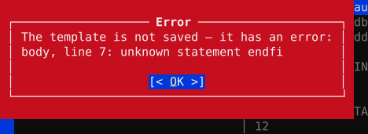
pgtc saves only templates it can read back: a header that is complete and a body that is correct Jinja. Otherwise the file is left as it was, the message names the problem, and the cursor goes to the line of a mistake in the body. So a template in your templates folder never breaks the F7 picker.
The templates that come with pgtc

overwrites the files that came with pgtc — after an update, to bring their new versions. A change you made in such a file would be lost then. So pgtc asks:
| Button | What it does |
|---|---|
| Save as copy | Opens Save template with the file name …_copy. The tab belongs to the copy from then on; the original stays unchanged. Give the copy another Name, too. Recommended. |
| Save anyway | Writes the file. pgtc does not ask again while this tab is open. |
| Cancel | Does not save. |
Closing a tab with changes
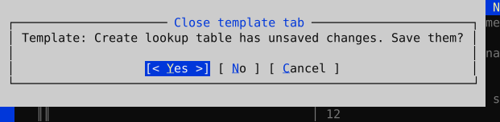
Closing a template tab with unsaved changes asks, as a query tab does: Yes saves and closes, No closes without saving, Cancel keeps the tab. Quitting pgtc asks the same for every changed template. If the save is refused — the template has an error — the tab stays open.
(The question can be turned off for query tabs and template tabs together: , Ask to save query tabs when closing.)
Variants for server versions
Most templates work on every server. Where the SQL differs a little between versions, a
server check in the body is enough. Where it differs a lot, the template can have a second
file for newer servers — a variant: a file of the same name in a
version folder. On a server of PostgreSQL 16 or newer, F7 uses the file
from 16_plus; on older servers the one from default.

- Open the template (it must have a file — save a new one first).
- F7, , type the first major version the variant is for, Enter.
- A second tab opens with a copy of the template; its file bar shows the path in the new version folder, marked
*. Change what differs, and save with Ctrl+S. The file is written only then.
If the template has a variant for that version already, its tab is opened instead. In the manager, each variant has its own row, and Delete removes just that file.
The preview of a variant is made for the first version of its folder (while no connected server is selected), so you see at once what the newer servers get.
Keys of the template tab
| Key | Where | What it does | Command |
|---|---|---|---|
| Ctrl+S | Everywhere in the tab | Save | save_file |
| F5 | Everywhere in the tab | Test the template in its form | template_test |
| F7 | Everywhere in the tab | Helper menu | template_helpers |
| Ctrl+T | Everywhere in the tab | Parameter list / raw header | template_raw_header |
| Alt+Down / Alt+Up | Everywhere in the tab | Next / previous part | focus_lower, focus_upper |
| Ctrl+R | Everywhere in the tab | Hide / show the preview | toggle_results |
| Alt+Shift+Up / Alt+Shift+Down | Everywhere in the tab | Preview smaller / larger | results_smaller, results_larger |
| Tab / Shift+Tab | Header list, preview | Next / previous part | next_field, prev_field |
| Enter | Header list | Edit the name, the description or the parameter | template_edit_param |
| Insert | Header list | Add a parameter | template_add_param |
| Delete | Header list | Delete the parameter | template_delete_param |
| Ctrl+Up, Shift+Up | Header list | Move the parameter up | template_param_up |
| Ctrl+Down, Shift+Down | Header list | Move the parameter down | template_param_down |
| F2 | Header list | Context menu | context_menu |
| Enter | Preview | To the line of the body's error | |
| Ctrl+Space, Alt+/ | Body | Autocomplete: parameters, fields, filters, statements | complete |
| The editor keys | Body, raw header, preview | Moving, selecting, copy and paste, undo, find |
The keys of the header list, and F5, F7 and Ctrl+T, are in the section
[template] of keymap.toml. The helper menu's items have
no keys of their own; you can give them some: template_insert_param,
template_insert_construct, template_insert_filter, template_make_param,
template_add_variant — and template_manager for the manager.